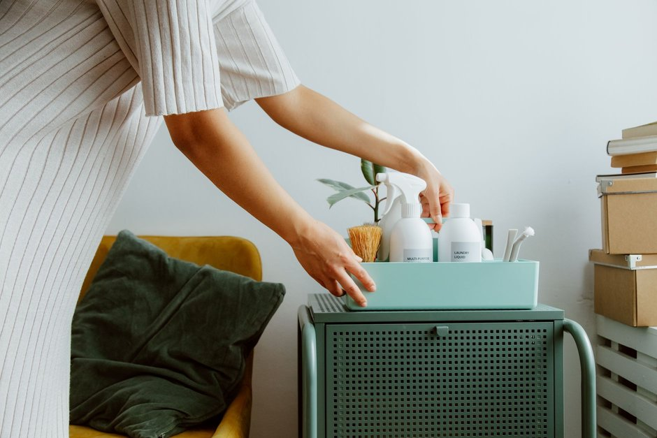

5 Pasos para optimizar el espacio con estanterías móviles

Photo: Ron Lach / Pexels
Las estanterías móviles (con ruedas) o modulares permiten adaptar un espacio pequeño a tus necesidades. Deben ser estables, así que estos son cinco pasos para usarlas con seguridad.
1. Elige una estantería estable
- Ruedas con freno, al menos en dos de ellas.
- Base ancha y estructura rígida, con carga máxima indicada.
- Una altura adecuada: cuanto más alta y estrecha, más riesgo de volcar.
2. Cárgala correctamente
Coloca los objetos más pesados en las baldas inferiores y los más ligeros arriba. No superes nunca la carga máxima. No dejes que los niños se suban.
3. Elige un uso
- Entrada del armario: ropa doblada, zapatos, accesorios.
- Cocina: especias, conservas, pequeños electrodomésticos, con las ruedas frenadas mientras cocinas.
- Oficina: documentos, material, libros.
- Separador ligero entre dos zonas de una habitación.
4. Colócala bien
Ponla sobre un suelo plano. Evita escaleras, pendientes, alfombras gruesas y la proximidad directa a una fuente de calor. Deja libre el paso hacia puertas y ventanas.
5. Revisa y fija si es alta
Si es alta, fíjala a la pared con una correa o un anclaje antivuelco, sobre todo con niños pequeños en casa. Comprueba con regularidad que los tornillos y las ruedas están bien apretados.
Productos peligrosos
No guardes productos de limpieza o de bricolaje peligrosos en una estantería al alcance de los niños. Guárdalos en un armario cerrado.
Usadas con cuidado, las estanterías móviles dan mucha flexibilidad a los espacios pequeños.